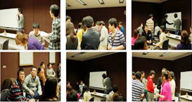
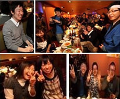
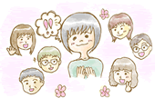
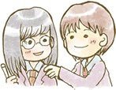
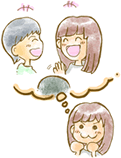

ダイコミュでは生徒さん同士の交流を深めるために イベントを2ヶ月に1度程度開催しています。コミュニケーション能力を向上させるには 実際に人間関係を築いていくことが何より大事です。はじめての方もたくさん参加されます。 まずは気軽にいらっしゃってくださいね♪
12月23日 コミュニケーション運動会＋忘年会
当イベントは満席となりました！ご応募頂いた生徒さんありがとうございます！２３日お会いできることを楽しみにしています コミュニケーション運動会とは、コミュニケーションをテーマに種目を作り、当日10チームほどつくり「コミュニケーション」に関する様々な種目でスキルのUPを目指していきます。
例えば1つの種目として心理学に関するクイズ課題を出して勉強していきます。
クイズ例
- 「世界一幸せな国はスイスである」
- 「人間関係を築く力がある人は健康度が実際に高い。○か×か」
- 「対人恐怖症」は日本独特の症状である。○か×か」
- 「実はネガティブな人ほどうまく課題を達成できる！という研究がある。○か×か」
などなど
通常講義では行わない、
コミュニケーションに関する様々なワークで
スキルをupしましょう。
具体的には以下の種目で楽しくコミュニケーション
しながらスキルを向上させていきましょう！
心理学クイズ
～初対面の印象形成では表情が何％重要？
などクイズに答えながらスキルUP～
褒め言葉 発想対決
～褒め言葉をたくさん考えよう！～
うそつきは誰だ？非言語を読み取ろう！
～相手の表情を見て、真意を探ろう～
ダイコミュ恒例ペーパータワー！
～チームの結束を高めて課題を克服します～
今年の振り返りをしよう
～最後に今年一年のコミュニケーションの関する振り返り～

運動会終了後は今年の振り返り自分自身の振返りと、来年の自己目標を立てて気持ちよく新年を迎えましょう！
＊仮なので種目は変更になる可能性があります
講座終了後はお楽しみの忘年会！
ダイコミュならではの騒ぎすぎず
しっとりまったりした忘年会にしましょう。
生徒さんからの声♪
全体イベント初めての方も安心できる雰囲気。今年も参加したい‼(横浜教室:なおさん)
私のダイコミュの初イベントは忘年会でした。 講座に通い始めてから2ヶ月で周りに馴染もうと一生懸命でした。 当日は右も左も分からず勢いだけで参加しましたので記憶はあやふやですが、楽しかった感覚だけは今も鮮明です。 だから今年も運動会から参加しようかな。結婚記念日に外出するなんて外道ですが、今から旦那さんサービスして、なんとか許してもらおう！ 全体イベントが初めての人も怖くありません。所詮（笑）ダイコミュです。いい人しかいませんよ。
きっと参加して良かった！と思える一日になります☆(横浜教室:ゴンベさん)
このイベント・・・。 最初に、運動会って聞いた時はチーム戦でスポーツやるのかと思ってました 自分は運動音痴だし、絶対に足引っ張っちゃうから罪悪感が半端無かったです。→俺と同じチームになった人が可愛そうだなあという意味で・・・。 でも、自分のとあるマイミク（勿論、経験者です）の方に教えて頂きました。 「スポーツはやらないよ（笑）」と。 それを聞いたときの安心感と言ったらそりゃあもう感動ものでしたよ～！(*⌒▽⌒*) 自分は今年からダイコミュ始めたため、このイベントは初めてですね。 勿論、最初から参加するつもりでいます。 全体イベントが初めてでも何も恐れるものなどありません！ きっと 参加して良かった！ と思える一日になることでしょう！(＾∇＾)
 短時間でもみんなに会いたい・一緒に楽しみたい！なので参加したいです！(埼玉教室:ちびさん)
短時間でもみんなに会いたい・一緒に楽しみたい！なので参加したいです！(埼玉教室:ちびさん)
埼玉教室ちびです
忘年会は初ですが…最後辺りになるかと
でも参加したーい^_^みなさんにお会いしたい
短時間を沢山楽しみたいです！今年は色々ありみなさんに助けてもらいました！よかった！楽しかった！にしたいです
仲間同士の繋がりを感じられる場所があるんだということを再確認できます。(元埼玉教室:マーベリックさん)
ダイコミュには、1年に1回、年末に一同が集結するイベントがあります。 それが「忘年会」 いつも顔を合わせている人も、初めての人も、久しぶりの人も 同じ講座を通してつながりあってます。 その楽しさは・・・来ればわかる、来なければ一生わからん！ この毎年行われる「忘年会」を楽しみに、そこから逆算して一年の計画を立てている人もいるくらいです。 もしも今、参加を迷っている方がいるなら、どうぞご遠慮なく。 親身になってくれる仲間がたくさんいる場所、それがダイコミュです。
飲み会で孤立しそうになっても､友好的に接してくれた人が居て安心しました。(JUNさん)
お疲れ様です！！ 去年は、飲み会の後に目標等を書いたのを覚えていますが、最初だったので飲み会で孤立する事を心配していました。 やはり途中でそういう場面にも一瞬なりましたが、他の席に移動しても比較的友好的に接してもらえて安心したのを覚えています。 自分は二回目ですが、今年はまたお会いした事が無い人達とお話しすることが出来るのが楽しみです。
運動会と言っても､気張らずリラックスして参加できる内容､今から楽しみ☆(第一銀座教室:ranraさん)
今年の５月から通っている、第一銀座に通っています、ランラですぅ、運動会かぁ、運動会うんなるほど、ちょっと無理かなぁいや、忘年会は、行くぞと、思っているそこのあなた、実は、運動会というよりは、頭の運動会みたいでっせ、是非皆さん参加しましょう( ´ ▽ ` )私も初めて参加致します、今からワクワクしてます( ´ ▽ ` )宜しくお願い致します(´∀｀)
ご参加方法
お久しぶりの過去の生徒さん、現役の生徒さん！はじめての方！大歓迎です♪
ダイコミュの雰囲気を知りたい方は是非いらっしゃってください。
＊ダイコミュ・MIXIをされている方
コミュニティ内にスレッドがあります！そちらでご報告お願いします。
＊講座未経験の方
こちらの備考欄に「運動会＋忘年会 もしくは 運動会のみ」とご記入ください。
講座未経験の方は前払いとなります
当日の雰囲気
ダイコミュ特有のテンション抑え目のまったりとした空気のなか、
ゆっくりと進めていきます。会話が苦手な方も無理せず、隣の人と話せればいいか?
ぐらいの気持ちでいらっしゃってくださいね♪
開催時間
運動会 13時15分 東京国際フォーラムG402
お手伝いできる方は12時30ごろにいらっしゃってください♪
めっちゃ助かります！
チームを作ってゲーム形式の講座を行います
今年の反省と努力できたことも振り返りましょう（＾＾）
運動会終了後は温野菜でしゃぶしゃぶ忘年会♪
忘年会 17時30分～（19時30ぐらいまで）銀座温野菜
費用
参加人数
70名を予想しています。
定員に達した場合、締め切りとなります。
場所
東京国際フォーラムG402
連絡先
緊急時は042-201-0101へご連絡ください